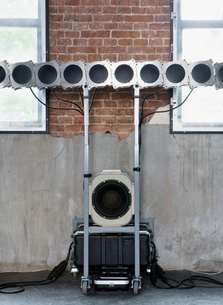
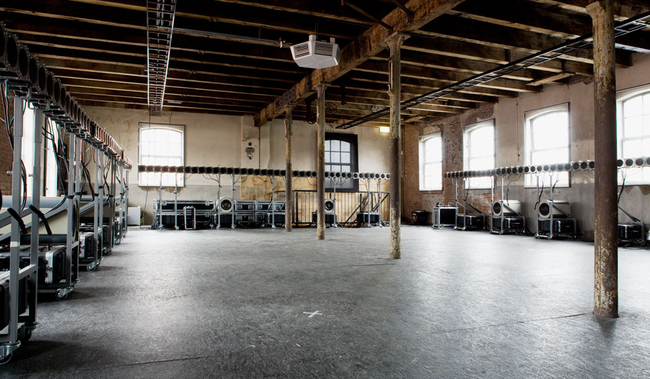
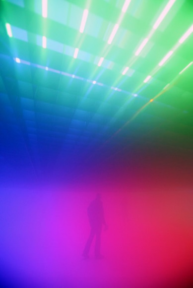
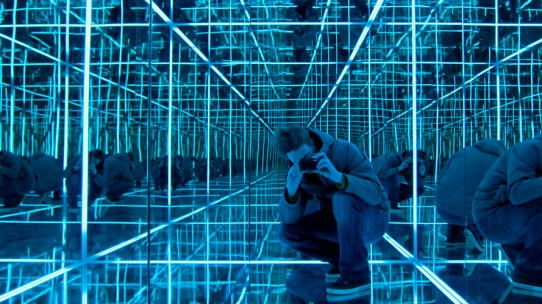
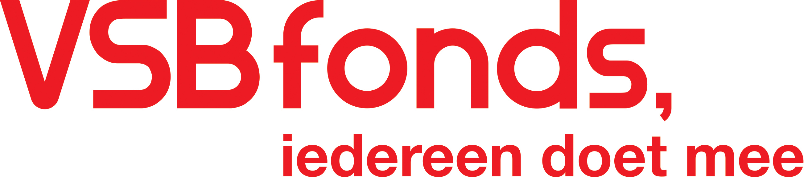
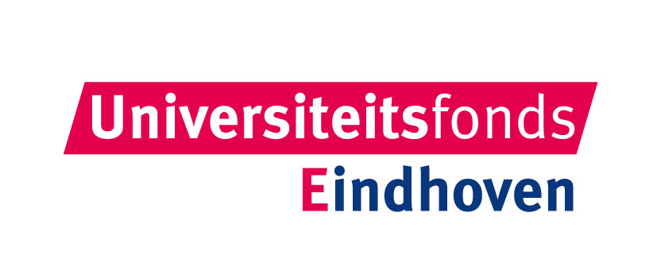
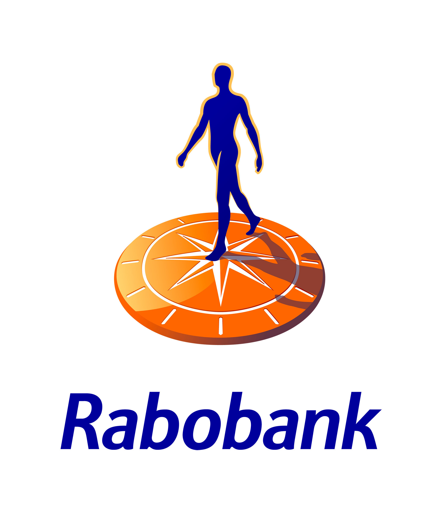

Quadrivium |
|||||||||||
|
|||||||||||
Organisatie |
|||||||||||
|
|||||||||||
Activiteiten |
|||||||||||
|
|||||||||||
voor Leden |
|||||||||||
|
|||||||||||
Contact |
|||||||||||
|
|||||||||||
GLOW Music
activiteiten
Van 8 tot 15 november is het weer zo ver: het lichtfestival GLOW verlicht Eindhoven met allerlei verschillende vormen van lichtkunst. Ook het Eindhovens Studenten Muziek Gezelschap Quadrivium zet dit jaar een onvergetelijke en vernieuwende show neer.
ESMG Quadrivium is dé vereniging in Eindhoven voor musicerende studenten. Deze vereniging bestaat uit 4 onderverenigingen zijnde een harmonieorkest, symfonieorkest, gemengd koor en een blokfluitensemble. Dit jaar bestaat de vereniging 50 jaar en dat betekent dat er een aantal grote concerten op het programma staan rondom het thema licht. En wat past hier beter bij dan GLOW?
Tijdens GLOW 2014 combineren alle 4 de onderverenigingen hun eigen muzikale programma met een lichtkunstwerk. Dit lichtkunstwerk is speciaal ontworpen voor de muziek die gespeeld wordt en reageert op waar de muziek vandaan komt. Op twee avonden musiceren de twee orkesten, het koor en het blokfluitensemble live. De rest van de avonden wordt de speciale techniek Wave Field Synthesis gebruikt. 192 luidsprekers geven de muziek op een 3D manier weer waardoor het lijkt alsof het orkest werkelijk aan het spelen is. De muziek geeft je, samen met het licht, het gevoel alsof je je in een virtuele werkelijkheid waant.
De live muziek wordt gespeeld op zaterdag 8 november van 18.30 tot 24.00 uur en op zondag 9 november van 18.30 tot 23.00 in de Schellensfabriek, een van de locaties op de GLOW-route. De rest van de week is de muziek ook te beluisteren, door middel van Wave Field Synthesis wat zorgt voor een vernieuwende ervaring van muziek. Dus komt allen!
Wave Field Synthesis
De opnames zullen op een speciale manier worden gepresenteerd, namelijk door gebruik te maken van golfveldsynthese of Wave Field Synthesis. Het Wave Field Synthesis systeem bestaat uit 192 speakers die in een rechthoek om de luisteraars worden geplaatst. Het geluid wordt bij deze weergavetechniek echt – dat wil zeggen natuurkundig in plaats van psychoakoestisch wat bij stereo en surround het geval is – ruimtelijk verspreid. Met Wave Field Synthesis kunnen geluiden worden bewogen, zowel binnen als buiten de rechthoek en kunnen geluiden op een bepaalde plek worden neergezet. Daarnaast reconstrueert het systeem de geluidsgolven zo, dat het gewenste effect overal in de ruimte goed waar te nemen is. Voor meer informatie over de stichting die dit systeem gebouwd heeft, zie www.gameoflife.nl.
 
Dong-Nae Gut
Speciaal voor het Wave Field Synthesis systeem is in 2013 een compositie gecomponeerd door Ji Youn Kang. De compositie, welke in samenspraak met stichting Game of Life is gemaakt, zal donderdagavond 13 november ook tijdens GLOW Music te horen zijn rond 22:00. Het schrijven van de compositie werd mede mogelijk gemaakt door het Fonds Podiumkunsten.
Lichtkunst
Het lichtkunstwerk zal boven de bezoekers geplaatst worden en zal bestaan uit een rooster van gekleurde lampen. Met kleuren zullen vervolgens de geluidsbronnen gevolgd worden. Tevens wordt de ruimte gevuld met rook om het licht nog meer te benadrukken en de bezoeker een beetje te desoriënteren. Zie hieronder enkele sfeerimpressies:
 
Jaap van den Elzen
Als lichtkunstenaar en ruimtelijk ontwerper werkt Jaap van den Elzen (Boxtel, 1977) vanuit zijn thuisbasis Eindhoven, City of Light. In opdracht werkt hij voor bedrijven, overheden en particulieren. Zijn werk is zowel nationaal als internationaal geëxposeerd in diversie galerieën, musea en de publieke ruimte.

HyperCube is een van de werken van Van den Elzen waarbij de toeschouwer volledig wordt ondergedompeld in een audiovisuele omgeving. Oneindige reflecties, gebrek aan ruimtelijke referentie, intense focus, desoriëntatie en een verstoorde beleving van tijd zorgen voor een overweldigende ervaring voor meerdere zintuigen. Zie voor meer informatie www.jaapvandenelzen.nl
Dit project wordt mede mogelijk gemaakt door
  